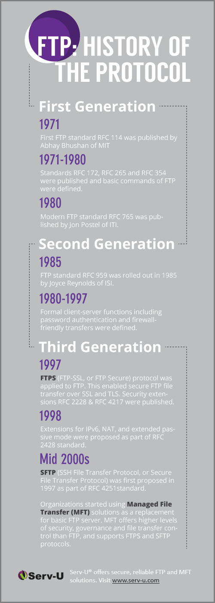

For its first five years (1990-1995), HTML went through a number of revisions and experienced a number of extensions, primarily hosted first at CERN, and then at the IETF.
With the creation of the W3C, HTML's development changed venue again. A first abortive attempt at extending HTML in 1995 known as HTML 3.0 then made way to a more pragmatic approach known as HTML 3.2, which was completed in 1997. HTML4 followed, reaching completion in 1998.
At this time, the W3C membership decided to stop evolving HTML and instead begin work on an XML-based equivalent, called XHTML. This effort started with a reformulation of HTML4 in XML, known as XHTML 1.0, which added no new features except the new serialization, and which was completed in 2000. After XHTML 1.0, the W3C's focus turned to making it easier for other working groups to extend XHTML, under the banner of XHTML Modularization. In parallel with this, the W3C also worked on a new language that was not compatible with the earlier HTML and XHTML languages, calling it XHTML2.
Around the time that HTML's evolution was stopped in 1998, parts of the API for HTML developed by browser vendors were specified and published under the name DOM Level 1 (in 1998) and DOM Level 2 Core and DOM Level 2 HTML (starting in 2000 and culminating in 2003). These efforts then petered out, with some DOM Level 3 specifications published in 2004 but the working group being closed before all the Level 3 drafts were completed.
In 2003, the publication of XForms, a technology which was positioned as the next generation of Web forms, sparked a renewed interest in evolving HTML itself, rather than finding replacements for it. This interest was borne from the realization that XML's deployment as a Web technology was limited to entirely new technologies (like RSS and later Atom), rather than as a replacement for existing deployed technologies (like HTML).
A proof of concept to show that it was possible to extend HTML4's forms to provide many of the features that XForms 1.0 introduced, without requiring browsers to implement rendering engines that were incompatible with existing HTML Web pages, was the first result of this renewed interest. At this early stage, while the draft was already publicly available, and input was already being solicited from all sources, the specification was only under Opera Software's copyright.
The idea that HTML's evolution should be reopened was tested at a W3C workshop in 2004, where some of the principles that underlie the HTML5 work (described below), as well as the aforementioned early draft proposal covering just forms-related features, were presented to the W3C jointly by Mozilla and Opera. The proposal was rejected on the grounds that the proposal conflicted with the previously chosen direction for the Web's evolution; the W3C staff and membership voted to continue developing XML-based replacements instead.
Shortly thereafter, Apple, Mozilla, and Opera jointly announced their intent to continue working on the effort under the umbrella of a new venue called the WHATWG. A public mailing list was created, and the draft was moved to the WHATWG site. The copyright was subsequently amended to be jointly owned by all three vendors, and to allow reuse of the specification.
The WHATWG was based on several core principles, in particular that technologies need to be backwards compatible, that specifications and implementations need to match even if this means changing the specification rather than the implementations, and that specifications need to be detailed enough that implementations can achieve complete interoperability without reverse-engineering each other.
The latter requirement in particular required that the scope of the HTML5 specification include what had previously been specified in three separate documents: HTML4, XHTML1, and DOM2 HTML. It also meant including significantly more detail than had previously been considered the norm.
In 2006, the W3C indicated an interest to participate in the development of HTML5 after all, and in 2007 formed a working group chartered to work with the WHATWG on the development of the HTML5 specification. Apple, Mozilla, and Opera allowed the W3C to publish the specification under the W3C copyright, while keeping a version with the less restrictive license on the WHATWG site.
Since then, both groups have been working together.
The HTML specification published by the WHATWG is not identical to this specification. At the time of this publication, the main differences were that the WHATWG version included features not included in this W3C version: some features have been omitted, but may be considered for future revisions of HTML beyond HTML5; and other features were omitted because at the W3C they are published as separate specifications.
A separate document has been published by the W3C HTML working group to document the differences between this specification and the language described in the HTML4 specification.
Hakon Wium Lie:"I'm Norwegian. In my native country, my name is quite normal and I even have a famous namesake. In English, my first name is unpronounceable, my middle name is shortened to a single letter, and my last name does not build confidence. I therefore go by the name howcome which, although grammatically dubious, is the closest pronounceable approximation".
In 1994, I created a small language called Cascading Style Sheets (CSS). CSS describes how web pages are presented — on screens, in print, or read out loud. You can read about it in a book I co-authored with my co-inventor Bert Bos. The book written in HTML and CSS, and converted to PDF by Prince. I'm the chairmain of the board of the company behind Prince. Our goal is to convert the book-publishing industry to use HTML and CSS.
"Like HTML, CSS is standardized by the W3 consortium. CSS is an open, independent and freely usable standard. As with HTML, a working group exists for CSS who concerns itself with development of the standard. This is being done in accordance with W3C rules. CSS comes in different versions. CSS level 1 was released in 1996, and republished with corections in 1999. CSS level 2 appeared in 1998 and built on CSS level 1. CSS level 2 adds support for different output media. CSS 3 is currently in development and will be split up in modules. The idea behind it was to seperate presentation and content of a web site. The advantage of this approach is that updates and changes to the presentation need only be applied once (to the stylesheet) to affect all pages. Especially large sites can achieve significant time savings. In order to enforce this separation of concerns, the W3C has deprecated the font tag in HTML 4. Newer (X)HTML versions will deprecate other tags in a similar vein. CSS stylesheets are an immediate addition to HTML. CSS is a language to define format properties of HTML or XML tags. HTML has reached the end of it's shelf life and is not being developed further. XHTML is the new standard instead. XHTML reformulates HTML with XML syntax while at the same time getting rid of presentational markup. XHTML only contains content, presentation is the domain of a CSS stylesheet. This allows for different stylesheets for different output formats such as print, aural or small devices. Search machines on the other hand have an easier job if they are only presented with content markup."
"CSS has various levels and profiles. Each level of CSS builds upon the last, typically adding new features and typically denoted as CSS 1, CSS 2, and CSS 3. Profiles are typically a subset of one or more levels of CSS built for a particular device or user interface. Currently there are profiles for mobile devices, printers, and television sets. Profiles should not be confused with media types, which were added in CSS 2.
The first CSS specification to become an official W3C Recommendation is CSS level 1, published in December 1996. Among its capabilities are support for
CSS level 2 specification was developed by the W3C and published as a Recommendation in May 1998. A superset of CSS 1, CSS 2 includes a number of new capabilities like absolute, relative, and fixed positioning of elements and z-index, the concept of media types, support for aural style sheets and bidirectional text, and new font properties such as shadows. The W3C no longer maintains the CSS 2 recommendation.
CSS level 2 revision 1 or CSS 2.1 fixes errors in CSS 2, removes poorly-supported or not fully interoperable features and adds already-implemented browser extensions to the specification.
In order to comply with the W3C Process for standardizing technical specifications, CSS 2.1 went back and forth between Working Draft status and Candidate Recommendation status for many years. CSS 2.1 first became a Candidate Recommendation on February 25, 2004, but it was reverted to a Working Draft on June 13, 2005 for further review. It was returned to Candidate Recommendation status on 19 July 2007 and was updated twice in 2009.
However, since changes and clarifications were made to the prose it went back to Last Call Working Draft on 7 December 2010. Later it went into Proposed Recommendation on 12 April 2011. It was published as a Recommendation on 7 June 2011.
Instead of defining all features in a single, large specification like CSS 2, CSS 3 is divided into several separate documents called "modules". Each module adds new capability or extends features defined in CSS 2, over preserving backward compatibility. Work on CSS level 3 started around the time of publication of the original CSS 2 recommendation. The earliest CSS 3 drafts were published in June 1999.
Due to the modularization, different modules have different stability and are in different status. As of March 2011, there are over 40 CSS modules published from the CSS Working Group. Some modules such as Selectors, Namespaces, Color and Media Queries are considered stable and are either in Candidate Recommendation or Proposed Recommendation status. Once CSS 2.1 is finalized and published as Recommendation, they are likely to go to Recommendation as well.
FTP has been around for over four decades, and has seen significant changes in encryption standards and file transfer functionality. The chart below chronicles the evolution of FTP and the introduction of Managed File Transfer, which offers support for secure protocols (such as FTPS and SFTP) and advanced administration capabilities for secure and controlled file transfer.
